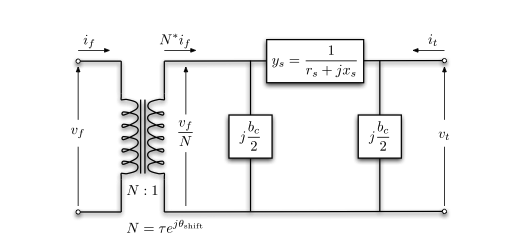

Introduction
This post is the first one in the series of power system operation. In this post, we will introduce the basic modelling method of power system operations. I feel this can be a great summary of the knowlege. Meanwhile, this series of post can be a reference to the open-source package power system operation I am developing.
I mainly follow the modelling method from MATPOWER. A reference can be found by the MATPOWER Manual.
Matrix form of the power flow model will be followed.
AC Model
Branch Model
The branch model is shown in the following figure.

- \(z_s = r_s + jx_s\): series impedance.
- \(\tau, \theta_{\text{shift}}\): transformer tap ratio magnitude and phase angle (in radians). The transformer is located at the from bus on a branch. If there is no transformer, \(\tau = 1\) and \(\theta_{\text{shift}} = 0\).
For a single branch, \[ \left[\begin{array}{l} i_f \\ i_t \end{array}\right]=Y_{b r}\left[\begin{array}{l} v_f \\ v_t \end{array}\right] \] where the branch admittance matrix \(Y_{b r}\) can be found by KCL law: \[ Y_{b r}=\left[\begin{array}{cc} \left(y_s+j \frac{b_c}{2}\right) \frac{1}{\tau^2} & -y_s \frac{1}{\tau e^{-j \theta_{\text {shif }}}} \\ -y_s \frac{1}{\tau e^{j \theta_{\text {shift }}}} & y_s+j \frac{b_c}{2} \end{array}\right] \tag{1}\]
Note that \(Y_{b r}\) is in general not symmetric unless \(\theta_{\text{shift}} = 0\).
Let’s denote the four elements of branch \(i\) as \[ Y_{b r}^i=\left[\begin{array}{cc} y_{f f}^i & y_{f t}^i \\ y_{t f}^i & y_{t t}^i \end{array}\right] \]
The branch number of the four elements can be summarized into vectors \(Y_{ff}\), \(Y_{ft}\), \(Y_{tf}\), \(Y_{tt}\).
Meanwhile, the from-side and to-side incidence matrix \(C_f\) and \(C_t\) are deifned such that the \((i,j)\) entry of \(C_f\) and the \((i,k)\) entry of \(C_t\) are 1 if branch \(i\) is connected from bus \(j\) to \(k\), respectively, and 0 otherwise. The branch-to-bus incidence matrix \(A = C_f - C_t\).
Generator Model
The generator complex power injection can be written as \[ S_g = P_g + jQ_g \]
The generator incidence matrix \(C_g\) is defined such that the \((i,j)\) entry of \(C_g\) is 1 if generator \(j\) is connected to bus \(i\), and 0 otherwise. Therefore, its contribution to bus (nodal) power injection is \[ S_{g,\text{bus}} = C_g S_g \]
Other type of generators, such as solar or wind renewables can be defined in the same way. The constant renewable power injection can also be viewed as negative load.
Load Model
A constant power load is modeled as active and reactive power consumption at each bus. The load complex power injection can be written as \[ S_d = P_d + jQ_d \]
Shunt Elements
A shunt=connected element, such as a capacitor or an inductor, is modeled as a fixed impedance to ground at a bus, whose admittance is \[ Y_{sh} = G_{sh} + jB_{sh} \]
Network Equations
Let \(V\) be the bus voltage and \(I_{\text{bus}}\) be the bus current injection. \[ \begin{aligned} I_{\text{bus}} = Y_{\text{bus}} V \\ I_f = Y_{f} V \\ I_t = Y_{t} V \end{aligned} \] with the system admittance matrices defined as \[ \begin{aligned} Y_f & =\left[Y_{f f}\right] C_f+\left[Y_{f t}\right] C_t, \\ Y_t & =\left[Y_{t t}\right] C_f+\left[Y_{t t}\right] C_t, \\ Y_{\text {bus }} & =C_f^{\top} Y_f+C_t^{\top} Y_t+\left[Y_{s h}\right] . \end{aligned} \] where \([\cdot]\) denotes the diagonal matrix of the vector.
In detail, we have the bus current injection as \[ I_{\text{bus}} = C_f^T[Y_{ff}]C_f V + C_f^T[Y_{ft}]C_t V + C_t^T[Y_{tf}]C_f V + C_t^T[Y_{tt}]C_t V + [Y_{sh}]V \]
To understand this, using the first term as an example, \(C_fV\) is the voltage at the from bus of the branch, \([Y_{ff}]C_fV\) is the current flowing at the from bus of the branch, e.g. the \(I_f\). \(C_f^T\) is the transpose of \(C_f\), which is the incidence matrix of the branches connected to the bus.
Then the complex power injection and flows can be written as (the power flow equation) \[ \begin{aligned} S_{\text {bus }}(V) & =[V] I_{\text {bus }}^*=[V] Y_{\text {bus }}^* V^*, \\ S_f(V) & =\left[C_f V\right] I_f^*=\left[C_f V\right] Y_f^* V^*, \\ S_t(V) & =\left[C_t V\right] I_t^*=\left[C_t V\right] Y_t^* V^* . \end{aligned} \] where \((\cdot)^\star\) is the element-wise conjugate operator on complex number. Note that \((AB)^\star = A^\star B^\star\).
The bus injection can be written as (power injection balance) \[ g_S\left(V, S_g\right)=S_{\text {bus }}(V)+S_d-C_g S_g=0 . \]
DC Model
The DC model takes three assumption on the AC model:
- The voltage magnitude is fixed at 1 p.u., e.g., \(v_i = e^{j\theta_i}\).
- The branches are lossless, e.g., \(y_s = 0\). The line charging susceptance \(b_c\) is also ignored. Therefore, the branch admittance is \(y_s = \frac{1}{jx_s}\).
- The voltage angle difference on each branch is small, e.g., \(\sin(\theta_f - \theta_t - \theta_{\text{shift}}) \approx \theta_f - \theta_t - \theta_{\text{shift}}\).
Based on the three assumptions, the branch admittance matrix \(Y_{b r}\) Equation 1 can be simplified as \[ Y_{b r} \approx \frac{1}{j x_s}\left[\begin{array}{cc} \frac{1}{\tau^2} & -\frac{1}{\tau e^{-j \theta_{\text {shift }}}} \\ -\frac{1}{\tau e^{j \theta_{\text {shift }}}} & 1 \end{array}\right] \]
Let \(b_i = \frac{1}{x_s^i\tau^i}\) and \(B_{ff}\) be the vector of \(b_i\) for all branches. Let \(P_{f,\text{shift}}\) be the vector of \(-\theta_{\text{shift}}^ib_i\). Then the bus power injection can be written as \[ P_{\text{bus}} = B_{\text{bus}}(\Theta) + P_{\text{bus,shift}} \] where \[ P_{\text {bus,shift }}=\left(C_f-C_t\right)^{\top} P_{f, \text { shift }} \]
The power flow equation can be written as \[ P_f(\Theta)=B_f \Theta+P_{f, \text { shift }} = -P_t(\Theta) \]
The DC-model system matrices can be written as \[ \begin{aligned} B_f & =\left[B_{f f}\right]\left(C_f-C_t\right), \\ B_{\text {bus }} & =\left(C_f-C_t\right)^{\top} B_f . \end{aligned} \]
The bus power injection balance can be written as \[ g_P\left(\Theta, P_g\right)=B_{\mathrm{bus}} \Theta+P_{\mathrm{bus}, \text { shift }}+P_d+G_{s h}-C_g P_g=0 \]